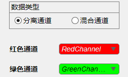
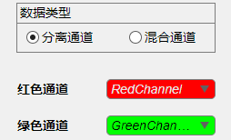

1.1 分离通道
 数据类型选择分离通道，通过红色通道与绿色通道下拉菜单选择变量，要求变量必须为四维数组(4-D numeric array)。下方表格中显示数据在每个维度上的大小。 X代表图像宽度，Y代表图像高度，C代表图像颜色通道数量，Z代表图像厚度，T代表图像帧数。 注：两通道数据在每个维度上的大小必须一致。

数据类型选择分离通道，通过红色通道与绿色通道下拉菜单选择变量，要求变量必须为四维数组(4-D numeric array)。下方表格中显示数据在每个维度上的大小。
X代表图像宽度，Y代表图像高度，C代表图像颜色通道数量，Z代表图像厚度，T代表图像帧数。
注：两通道数据在每个维度上的大小必须一致。